12 个系统 · 38 张图 · 全部通过 check_diagram.py。题注在下，引用句在上，均为可直接落库的成稿文字。
如图 1-1 所示，读者侧的用例集中在馆藏查询与借还，图书管理员侧的用例集中在书目维护与读者管理；借阅要经过身份认证，归还要触发逾期费计算。
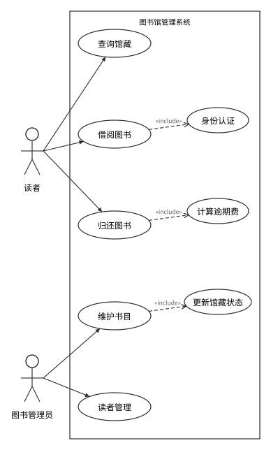
如图 1-2 所示，读者、图书、图书管理员三个类都与借阅记录存在一对多关联，借阅记录再与罚款记录一对一关联，罚款金额由逾期天数算出。
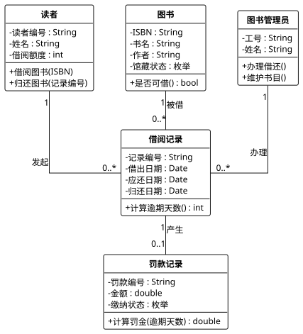
如图 1-3 所示，一次借书要经过刷证、校验借阅额度、查询图书状态、写入借阅记录四个环节，借阅服务只在确认图书在馆之后才落库。
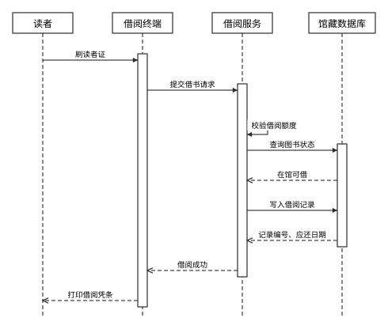
如图 1-4 所示，借书先判借阅额度、再判图书是否在馆，两道判断中任一不通过都不会生成借阅记录。
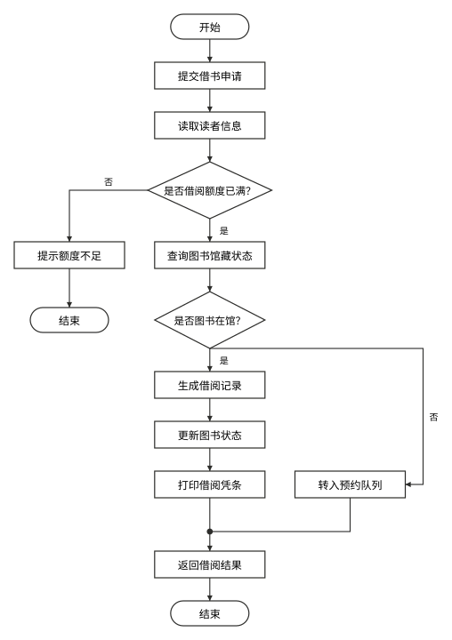
如图 1-5 所示，一册图书在在馆、已借出、逾期、遗失、已注销之间迁移，逾期与遗失最终都收敛到在馆或终止状态。
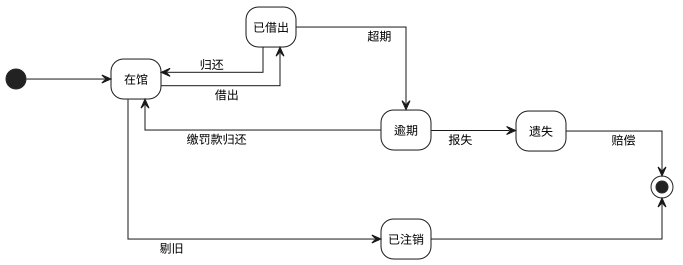
如图 2-1 所示，游客只能注册与浏览，购物车、下单、支付与退货四项用例属于已登录顾客；下单要校验库存，支付要过身份认证，退货要生成退款单。
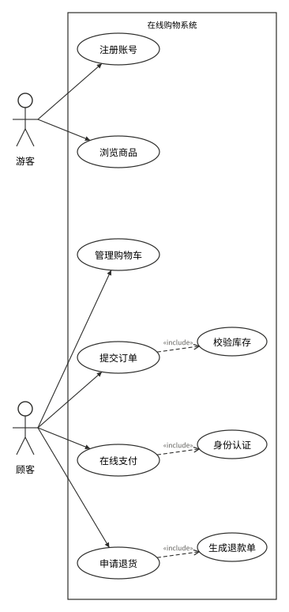
如图 2-2 所示，订单处理先校验库存再发起支付，任一环节失败都会释放已锁定的库存，不留下半成品订单。
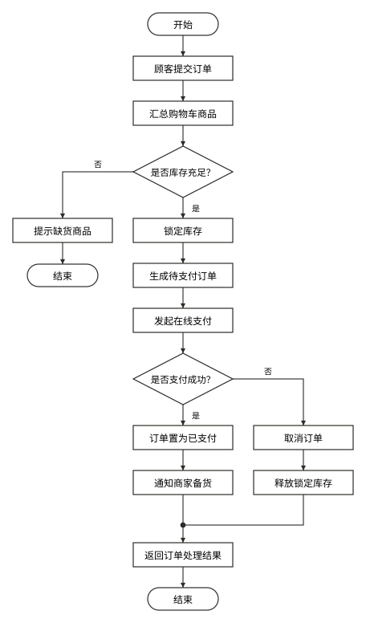
如图 2-3 所示，顾客点击提交后，购物车页面调用订单服务，订单服务向库存服务锁库、向支付服务建单，最后把订单号与支付链接回传前端。
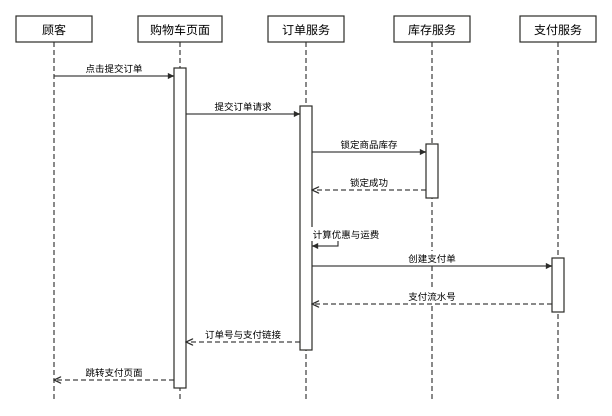
如图 3-1 所示，学生侧是选课、退课与查成绩，教师侧是录入成绩与查看选课名单；选课要先校验容量，录入成绩要联动绩点计算。
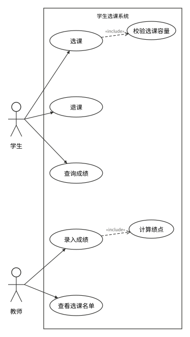
如图 3-2 所示，选课记录是学生与课程之间的关联类，一条选课记录对应一份成绩，教师通过主讲关系与课程相连。
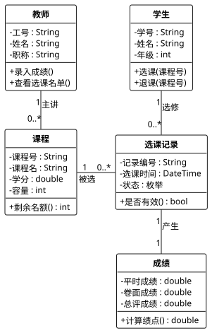
如图 3-3 所示，选课请求进入选课服务后先做时间冲突校验，再查剩余名额，两次校验都通过才写入选课记录。
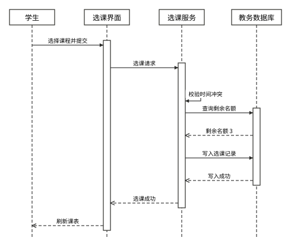
如图 4-1 所示，储户的查询余额、取款、存款、转账四项用例都以身份验证为前提，取款还要额外通过余额校验。
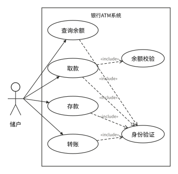
如图 4-2 所示，取款先验密码，密码错误即提示并退卡；通过后还要过单笔限额与账户余额两道判断，任一道不通过都在提示后结束，全部通过才扣减余额、指令出钞。
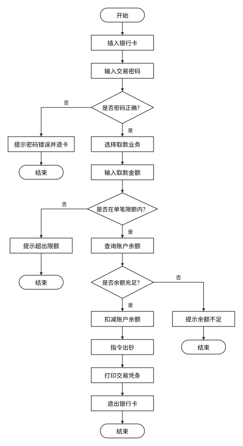
如图 4-3 所示，ATM 终端只负责采集输入与出钞，凭证校验、余额查询与记账全部由银行主机和账务数据库完成。
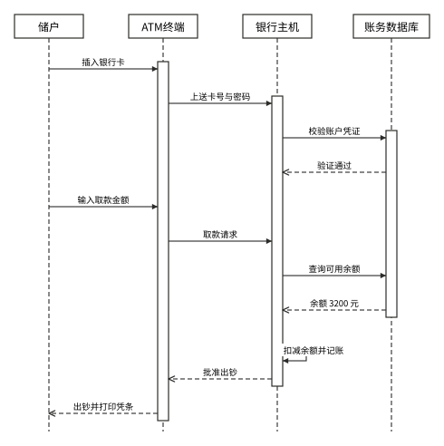
如图 5-1 所示，患者负责预约与取消，医生接诊叫号，护士分诊登记，管理员维护排班；预约要先过号源校验，接诊要调阅病历。
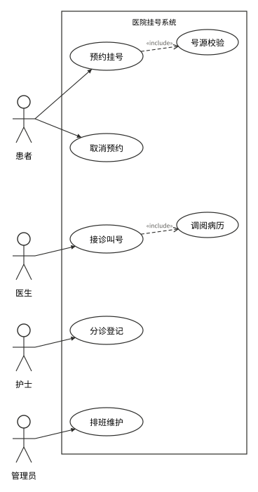
如图 5-2 所示，患者与医生都与预约记录关联，医生隶属于科室，一次就诊完成后由预约记录生成一份病历。
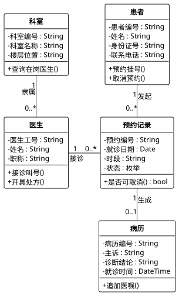
如图 5-3 所示，预约流程先查号源余量、再锁号并落库，落库成功后才调用短信平台通知患者。
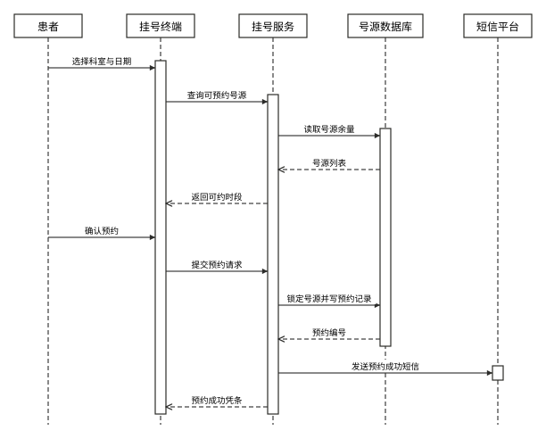
如图 6-1 所示，用户、商家、骑手三方各管一段：用户下单与评价，商家接单与更新出餐状态，骑手配送与确认送达；下单要在线支付，送达要上传凭证。
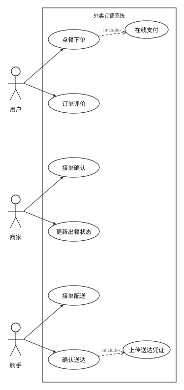
如图 6-2 所示，订单从待支付起，经待接单、制作中、待取餐、配送中到已送达与已完成；支付超时与商家拒单都会落到已取消。
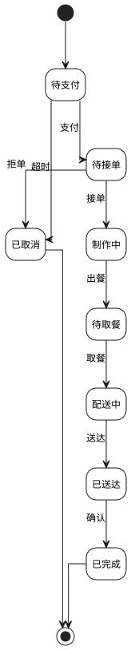
如图 6-3 所示，从下单到送达只有商家接单一个分支点：拒单则取消并原路退款，接单后进入备餐、发布配送、到店取餐、配送、送达上传凭证、用户确认收货的直线流程。
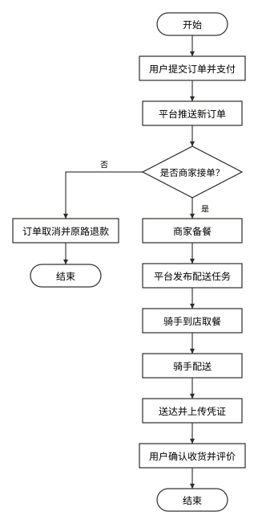
如图 7-1 所示，学生办理入住、退宿与报修，管理员分配宿舍与处理报修；入住要校验床位，报修要生成维修单。
如图 7-2 所示，宿舍包含多个床位，一个床位同一时刻只被一名学生占用，学生提交的维修单由宿管员处理。
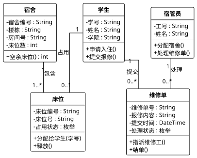
如图 7-3 所示，报修先校验信息完整性，再由宿管员判断是否需要外部维修队，维修完成后由学生确认才结单。
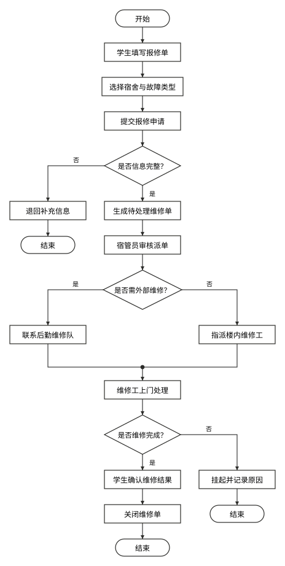
如图 8-1 所示，观众从查询影片、选择场次到选座购票，选座要锁定座位、支付要过支付网关，退票要释放座位。
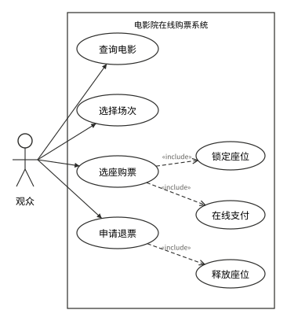
如图 8-2 所示，锁座成功后座位只保留十五分钟，支付回执到达才把座位置为已售并出票，超时未付则自动释放。
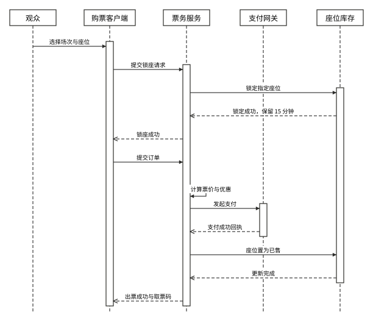
如图 8-3 所示，影片与影厅各自对应多个场次，影厅包含固定座位，场次与座位的组合决定一张票券。
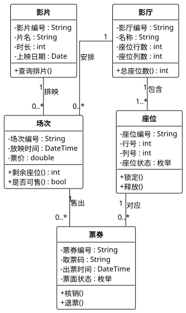
如图 9-1 所示，用户的上传、下载、分享与文件管理四类操作中，上传要过格式校验，分享要生成链接，管理文件包含删除与重命名两个子用例。
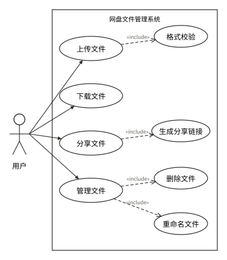
如图 9-2 所示，分享流程先校验文件归属，再生成带令牌的链接；访客打开时还要过有效期与访问密码两道校验，都通过才提供下载。
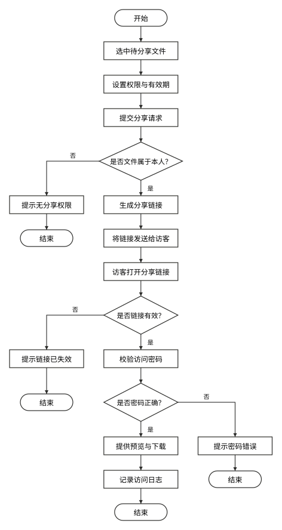
如图 9-3 所示，文件从上传中进入正常，删除后进回收站，回收站里既可恢复也可彻底清除，上传中断则直接落到已失败。
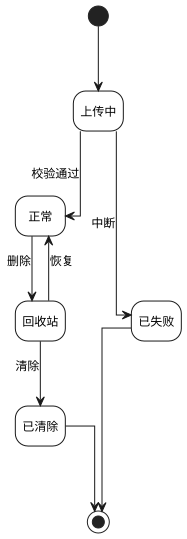
如图 10-1 所示，车主的入场、缴费、出场三个用例构成一次停车闭环，入场要车牌识别，出场要停车计费；管理员负责月卡与车位监控。
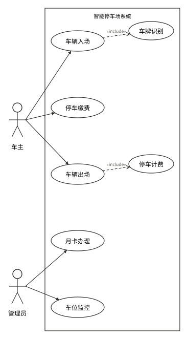
如图 10-2 所示，入场先识别车牌再判车位是否已满，出场重新识别车牌并计费，月卡有效或已缴费才抬杆放行。
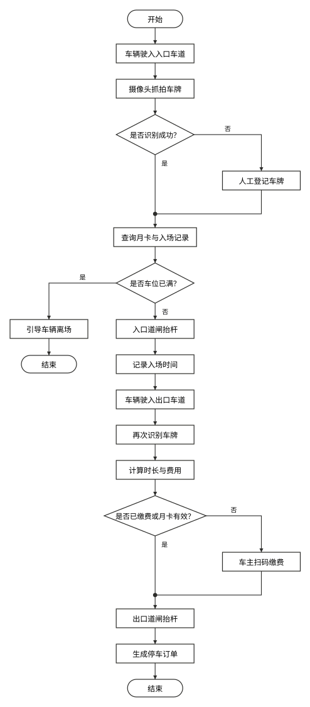
如图 10-3 所示，一个车主可拥有多辆车，车辆每次入场生成一条停车订单，订单占用一个车位并对应一条收费记录。
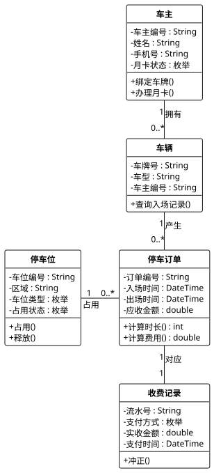
如图 11-1 所示，学生答题、交卷、查成绩，教师组卷与阅卷；交卷触发自动判分，组卷要先抽取题目。
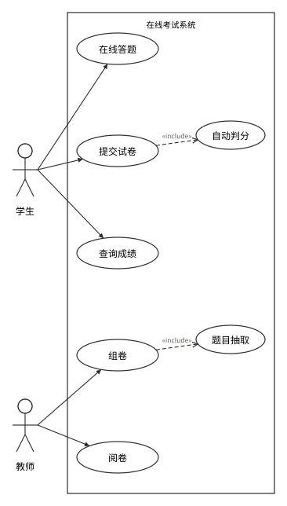
如图 11-2 所示，答题与答案暂存构成一个循环，"是否继续答题"为是时回流到作答；循环结束后才按触发源分流——到点由系统自动交卷，否则由学生手动交卷，两种交卷统一汇入冻结答卷、判分、阅卷与发布。
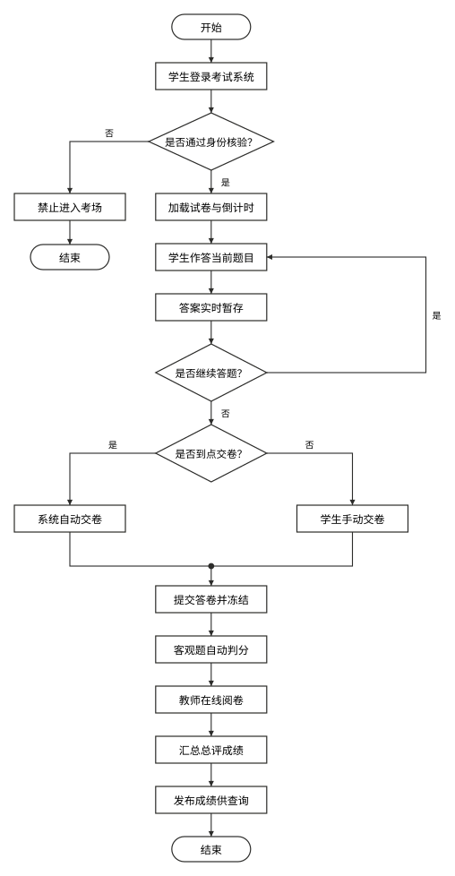
如图 11-3 所示，交卷请求先校验考试时段，答卷写入后立即加锁，判分服务只回传客观题得分，主观题留给教师。
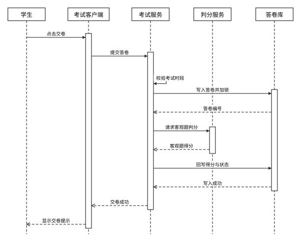
如图 12-1 所示，寄件人下单与查物流，快递员揽收与派送签收；下单要算运费，签收要上传凭证。
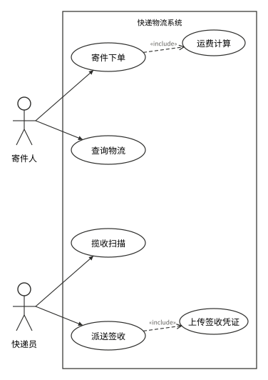
如图 12-2 所示，包裹从待揽收起，经已揽收、运输中、派送中到已签收；派送异常先进异常件，可重派也可退回。
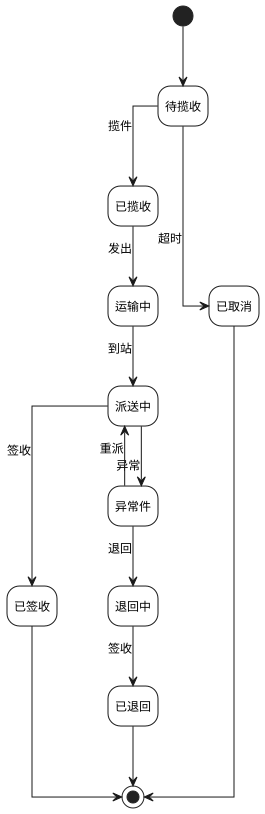
如图 12-3 所示，寄件下单由订单服务生成运单，揽收后由订单服务把信息推送给物流中心，分拣、派送、签收的状态再逐级回传。
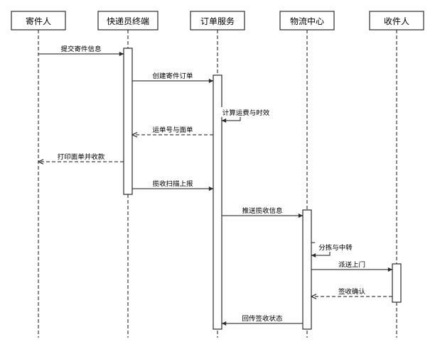